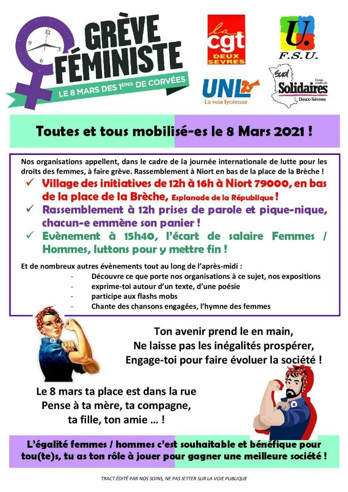

Publication
8 mars 2021. Des droits et l’égalité dans les faits
Date indiquée par Facebook · 6 mars 2021
Repères éditoriaux
Le 8 mars est une journée de lutte pour les droits des femmes. Le texte d’époque défend l’égalité de traitement comme une exigence sociale et démocratique.
Texte conservé avec la publication
8 mars, journée internationale de lutte pour le droit des femmes.
L'égalité de traitement entre les femmes et les hommes est un droit, alors le
8 Mars 2021 on lutte toutes et tous. .
A Niort voici les modalités

Sources
Archive rouge · export Facebook · AR-0002-FB-02059
À lire aussi · À Niort, appel à se rassembler en mémoire de Lyhanna et en soutien aux victimes